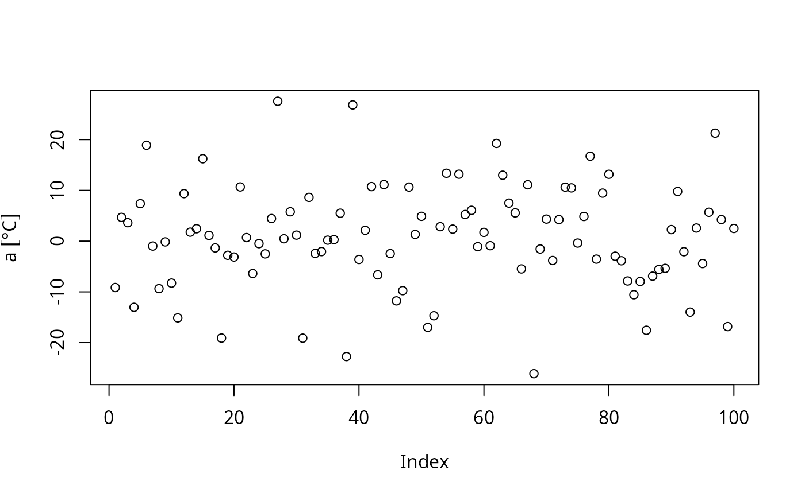

celsius.Rdcelsius jsut convert add unit celsius to different
R objects
celsius(x)
| x | Object with class "data.frame", "matrix", "numeric" or "integer" |
|---|
Objects of class "data.frame" or "units"
{ a <- celsius(rnorm(100)*10) plot(a) b <- celsius(matrix(rnorm(100)*10, ncol = 10)) print(head(b)) }#> V1 V2 V3 V4 #> 1 -4.2938009 [°C] -11.533984 [°C] -3.3893587 [°C] 2.3742535 [°C] #> 2 13.6046133 [°C] -3.406379 [°C] -0.7557425 [°C] -13.1281425 [°C] #> 3 -0.7085743 [°C] 7.863626 [°C] 0.4020439 [°C] 7.4702859 [°C] #> 4 -2.7215368 [°C] -12.705131 [°C] 1.2430107 [°C] -15.6251843 [°C] #> 5 -24.4668003 [°C] 5.421415 [°C] -9.9843255 [°C] 0.7105336 [°C] #> 6 0.6548664 [°C] 0.751059 [°C] 12.3339006 [°C] -6.3953477 [°C] #> V5 V6 V7 V8 #> 1 -9.028149 [°C] -8.302143 [°C] 1.4967935 [°C] 0.60898893 [°C] #> 2 13.176337 [°C] -5.035929 [°C] -14.3332110 [°C] -21.77576028 [°C] #> 3 11.001897 [°C] -11.936412 [°C] -0.1030332 [°C] -1.17860143 [°C] #> 4 12.037678 [°C] -7.517233 [°C] -2.1223603 [°C] 1.12294787 [°C] #> 5 -14.312708 [°C] 14.558414 [°C] -9.0634018 [°C] 0.07886198 [°C] #> 6 13.829109 [°C] -8.286035 [°C] -21.0215248 [°C] 18.77743872 [°C] #> V9 V10 #> 1 10.120018 [°C] -1.740864 [°C] #> 2 -9.190516 [°C] -2.217445 [°C] #> 3 5.633801 [°C] -10.095287 [°C] #> 4 3.224827 [°C] 4.807253 [°C] #> 5 3.666744 [°C] 16.044073 [°C] #> 6 11.298352 [°C] -15.150245 [°C]